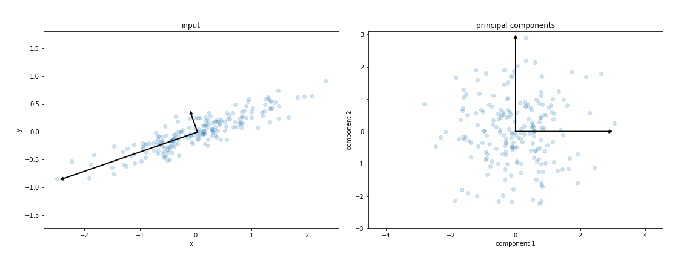
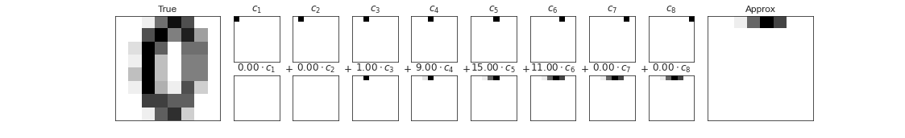
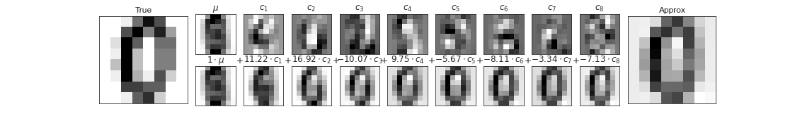

Bu sayfa orijinal kitap bölümünün eksiksiz Türkçe uyarlamasıdır — atlanan başlık/kod yoktur. Zor yerlerde ek ders notu ve 🧪 Şimdi deneyin kutuları vardır.
Orijinal (EN): 05.09 Principal Component Analysis · Jupyter notebook
5.9 Derinlemesine: Temel Bileşen Analizi
Orijinal: 05.09 Principal Component Analysis
Şimdiye kadar etiketli eğitim verisine dayalı denetimli tahmin edicilerini inceledik. Burada bilinen etiketlere başvurmadan verinin ilginç yönlerini vurgulayan denetimsiz tahmin edicilere bakmaya başlıyoruz.
Bu bölümde en yaygın kullanılan denetimsiz algoritmalardan biri olan temel bileşen analizini (PCA) ele alacağız. PCA temelde boyut indirgeme algoritmasıdır; görselleştirme, gürültü filtreleme ve öznitelik çıkarımı için de kullanılır.
Standart içe aktarmalarla başlayalım:
%matplotlib inline
import numpy as np
import matplotlib.pyplot as plt
plt.style.use('seaborn-whitegrid')explained_variance_ratio_ her bileşenin toplam varyansa katkısını verir. Yüksek boyutta ilk birkaç bileşene bakarak verinin içsel boyutunu kestirebilirsiniz.
Temel Bileşen Analizine Giriş
rng = np.random.RandomState(1)
X = np.dot(rng.rand(2, 2), rng.randn(2, 200)).T
plt.scatter(X[:, 0], X[:, 1])
plt.axis('equal');Gözle x ve y değişkenleri arasında neredeyse doğrusal bir ilişki olduğu görülür. Bu 5.6 Doğrusal Regresyon verisini anımsatır; ancak burada y değerlerini x değerlerinden tahmin etmek yerine, x ve y arasındaki ilişkiyi öğrenmeye çalışıyoruz.
from sklearn.decomposition import PCA
pca = PCA(n_components=2)
pca.fit(X)İki boyutlu veriye PCA uygulayın:
import numpy as np
from sklearn.decomposition import PCA
rng = np.random.RandomState(1)
X = np.dot(rng.rand(2, 2), rng.randn(2, 200)).T
pca = PCA(n_components=2)
pca.fit(X)
print("Bileşenler:\n", pca.components_)
print("Açıklanan varyans:", pca.explained_variance_ratio_)PCA bu ilişkiyi verideki temel eksenler listesini bularak niceler. Scikit-Learn PCA tahmin edicisiyle bunu hesaplayabiliriz:
print(pca.components_)print(pca.explained_variance_)Bu sayıların anlamını, bileşenleri girdi verisi üzerinde vektör olarak görselleştirerek görelim (aşağıdaki şekil):
def draw_vector(v0, v1, ax=None):
ax = ax or plt.gca()
arrowprops=dict(arrowstyle='->', linewidth=2,
shrinkA=0, shrinkB=0)
ax.annotate('', v1, v0, arrowprops=arrowprops)
# plot data
plt.scatter(X[:, 0], X[:, 1], alpha=0.2)
for length, vector in zip(pca.explained_variance_, pca.components_):
v = vector * 3 * np.sqrt(length)
draw_vector(pca.mean_, pca.mean_ + v)
plt.axis('equal');Bu vektörler verinin temel eksenlerini temsil eder; uzunlukları o eksene yansıtıldığında varyansın ne kadar "önemli" olduğunu gösterir.

Veri eksenlerinden temel eksenlere bu dönüşüm, öteleme, dönme ve ölçümlemeden oluşan bir affine dönüşümdür.
Boyut İndirgeme Olarak PCA
pca = PCA(n_components=1)
pca.fit(X)
X_pca = pca.transform(X)
print("original shape: ", X.shape)
print("transformed shape:", X_pca.shape)Dönüştürülmüş veri tek boyuta indirgendi. Etkiyi görmek için ters dönüşümü yapıp orijinal veriyle birlikte çizebiliriz (aşağıdaki şekil):
X_new = pca.inverse_transform(X_pca)
plt.scatter(X[:, 0], X[:, 1], alpha=0.2)
plt.scatter(X_new[:, 0], X_new[:, 1], alpha=0.8)
plt.axis('equal');Açık noktalar orijinal veri, koyu noktalar yansıtılmış sürümdür. En az önemli eksen(ler) boyunca bilgi atılır; atılan varyans oranı yaklaşık olarak atılan bilgi miktarını ölçer.
Görselleştirme için PCA: El Yazısı Rakamlar
from sklearn.datasets import load_digits
digits = load_digits()
digits.data.shapeDigits veri kümesi 8×8 piksel görüntülerden oluşur — 64 boyutludur. İlişkileri görmek için PCA ile iki boyuta indirebiliriz:
pca = PCA(2) # project from 64 to 2 dimensions
projected = pca.fit_transform(digits.data)
print(digits.data.shape)
print(projected.shape)Digits verisini 2D'ye indirin:
from sklearn.datasets import load_digits
from sklearn.decomposition import PCA
digits = load_digits()
proj = PCA(2).fit_transform(digits.data)
print("Projeksiyon şekli:", proj.shape)İlk iki temel bileşeni çizerek veri hakkında bilgi ediniriz (aşağıdaki şekil). Bu bileşenler 64 boyutlu nokta bulutunun en büyük varyans yönlerine yansımasıdır.
plt.scatter(projected[:, 0], projected[:, 1],
c=digits.target, edgecolor='none', alpha=0.5,
cmap=plt.cm.get_cmap('rainbow', 10))
plt.xlabel('component 1')
plt.ylabel('component 2')
plt.colorbar();Veri 64 boyutlu bir nokta bulutudur; bu yansıtmalar en büyük varyans yönleri boyunca yapılır — denetimsiz biçimde, etiketlere başvurmadan.
Bileşenler Ne Anlama Gelir?
Biraz daha ileri gidip indirgenmiş boyutların ne anlama geldiğini sorabiliriz. Bu anlam, temel vektörlerin kombinasyonları cinsinden anlaşılabilir. Örneğin eğitim kümesindeki her görüntü 64 piksel değeriyle tanımlanır; buna $x$ vektörü diyelim:
$$ x = [x_1, x_2, x_3 \cdots x_{64}] $$
Bunu piksel temeli cinsinden düşünebiliriz: görüntüyü oluşturmak için vektörün her elemanını ilgili pikselle çarpıp sonuçları toplarız:
$$ {\rm image}(x) = x_1 \cdot{\rm (piksel~1)} + x_2 \cdot{\rm (piksel~2)} + x_3 \cdot{\rm (piksel~3)} \cdots x_{64} \cdot{\rm (piksel~64)} $$
Boyutu indirmek için bu temel vektörlerin çoğunu sıfırlayabiliriz. Örneğin yalnızca ilk sekiz pikseli kullanırsak sekiz boyutlu bir projeksiyon elde ederiz (aşağıdaki şekil); ancak görüntünün bütününü yansıtmaz — piksellerin neredeyse %90'ını attık!

Üst sıra tek tek pikselleri, alt sıra bu piksellerin görüntü oluşturmadaki kümülatif katkısını gösterir. Yalnızca sekiz piksel temel bileşeniyle 64 piksellik görüntünün yalnızca küçük bir kısmı oluşturulur.
Piksel temsili tek temel seçeneği değildir. Her pikselden önceden tanımlı katkı içeren başka temel fonksiyonlar da kullanılabilir:
$$ {\rm image}(x) = {\rm mean} + x_1 \cdot{\rm (temel~1)} + x_2 \cdot{\rm (temel~2)} + x_3 \cdot{\rm (temel~3)} \cdots $$
PCA, yalnızca ilk birkaçının toplanmasının veri kümesinin büyük kısmını uygun biçimde yeniden oluşturmasına yetecek optimal temel fonksiyonları seçme süreci olarak düşünülebilir. Temel bileşenler, verinin düşük boyutlu temsilidir. Aşağıdaki şekil aynı rakamı ortalama artı ilk sekiz PCA temel fonksiyonuyla yeniden oluşturmayı gösterir.

Piksel temeline göre PCA temeli, yalnızca ortalama artı sekiz bileşenle girdinin belirgin özelliklerini kurtarır!
Bileşen Sayısını Seçmek
pca = PCA().fit(digits.data)
plt.plot(np.cumsum(pca.explained_variance_ratio_))
plt.xlabel('number of components')
plt.ylabel('cumulative explained variance');Bu eğri, toplam 64 boyutlu varyansın ilk $N$ bileşende ne kadarının kaldığını gösterir. İlk 10 bileşen yaklaşık %75 varyans içerir; %100'e yakın için yaklaşık 50 bileşen gerekir.
Gürültü Filtreleme Olarak PCA
def plot_digits(data):
fig, axes = plt.subplots(4, 10, figsize=(10, 4),
subplot_kw={'xticks':[], 'yticks':[]},
gridspec_kw=dict(hspace=0.1, wspace=0.1))
for i, ax in enumerate(axes.flat):
ax.imshow(data[i].reshape(8, 8),
cmap='binary', interpolation='nearest',
clim=(0, 16))
plot_digits(digits.data)Önce gürültüsüz birkaç örnek çizelim (aşağıdaki şekil), sonra rastgele gürültü ekleyip yeniden çizelim:
rng = np.random.default_rng(42)
rng.normal(10, 2)rng = np.random.default_rng(42)
noisy = rng.normal(digits.data, 4)
plot_digits(noisy)Gürültülü veride PCA ile varyansın %50'sini koruyarak projeksiyon isteyelim:
pca = PCA(0.50).fit(noisy)
pca.n_components_%50 varyans 64 öznitelikten 12 temel bileşene karşılık gelir. Ters dönüşümle filtrelenmiş rakamları elde ederiz (aşağıdaki şekil).
components = pca.transform(noisy)
filtered = pca.inverse_transform(components)
plot_digits(filtered)Bu sinyal koruma/gürültü filtreleme özelliği PCA'yı güçlü bir öznitelik seçimi rutini yapar.
Örnek: Öz Yüzler (Eigenfaces)
from sklearn.datasets import fetch_lfw_people
faces = fetch_lfw_people(min_faces_per_person=60)
print(faces.target_names)
print(faces.images.shape)Daha önce yüz tanımada PCA projeksiyonunu öznitelik seçici olarak 5.7 SVM ile kullandık. LFW veri kümesine tekrar bakalım:
pca = PCA(150, svd_solver='randomized', random_state=42)
pca.fit(faces.data)İlk 150 bileşenle ilişkili görüntüler öz yüzler (eigenfaces) olarak bilinir (aşağıdaki şekil):
fig, axes = plt.subplots(3, 8, figsize=(9, 4),
subplot_kw={'xticks':[], 'yticks':[]},
gridspec_kw=dict(hspace=0.1, wspace=0.1))
for i, ax in enumerate(axes.flat):
ax.imshow(pca.components_[i].reshape(62, 47), cmap='bone')İlk birkaç öz yüz aydınlatma açısıyla, sonrakiler göz, burun, dudak gibi özellikleri seçer gibi görünür.
plt.plot(np.cumsum(pca.explained_variance_ratio_))
plt.xlabel('number of components')
plt.ylabel('cumulative explained variance');150 bileşen varyansın biraz üzerinde %90'ını açıklar. Girdi ile 150 bileşenden yeniden oluşturulan görüntüleri karşılaştırabiliriz (aşağıdaki şekil):
# Compute the components and projected faces
pca = pca.fit(faces.data)
components = pca.transform(faces.data)
projected = pca.inverse_transform(components)# Plot the results
fig, ax = plt.subplots(2, 10, figsize=(10, 2.5),
subplot_kw={'xticks':[], 'yticks':[]},
gridspec_kw=dict(hspace=0.1, wspace=0.1))
for i in range(10):
ax[0, i].imshow(faces.data[i].reshape(62, 47), cmap='binary_r')
ax[1, i].imshow(projected[i].reshape(62, 47), cmap='binary_r')
ax[0, 0].set_ylabel('full-dim\ninput')
ax[1, 0].set_ylabel('150-dim\nreconstruction');Üst sıra girdi, alt sıra ~3.000 öznitelikten yalnızca 150 ile yeniden oluşturma. Boyutluluğu yaklaşık 20 kat azaltırken bireyler gözle tanınabilir kalır — 5.7 SVM örneğindeki PCA seçiminin neden başarılı olduğu anlaşılır.
Özet
Bu bölümde PCA'yı boyut indirgeme, görselleştirme, gürültü filtreleme ve öznitelik seçimi için kullandık.
PCA'nın ana zayıflığı aykırı değerlere karşı hassasiyettir; Scikit-Learn sklearn.decomposition alt modülünde SparsePCA gibi varyantlar vardır.
Sonraki bölümlerde PCA fikirlerini genişleten denetimsiz yöntemlere bakacağız.